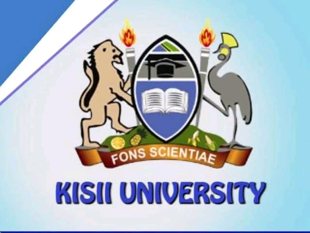
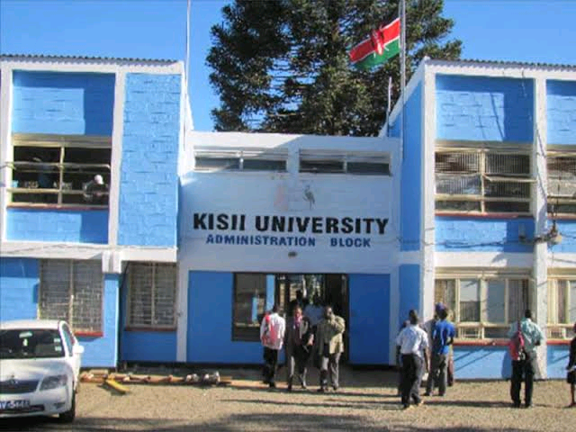
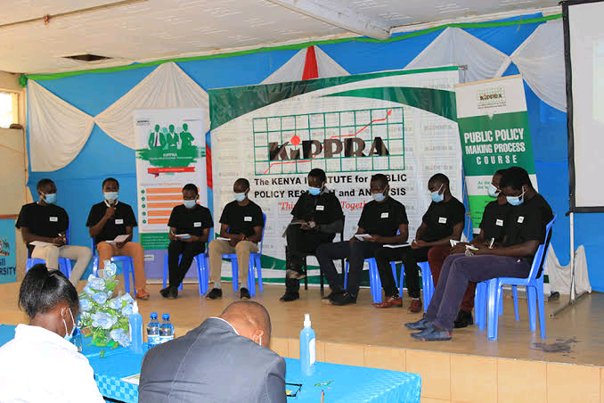
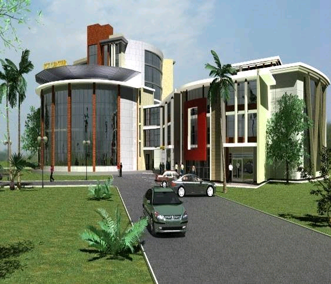
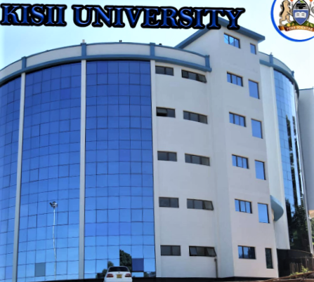
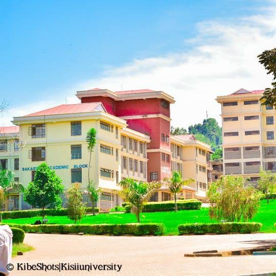
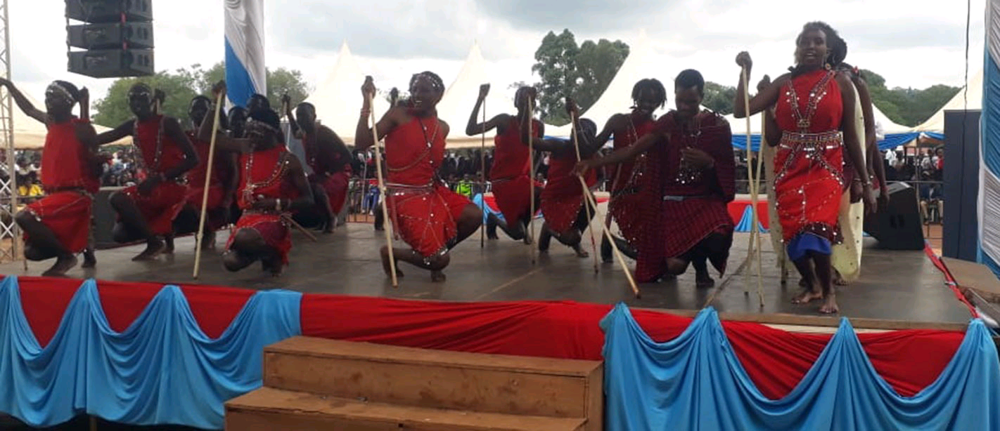

HISTORY OF KISII UNIVERSITY
Kisii university is a public university located in kisii which was founded in 1965 as primary teachers college on a 61-acre land that was donated by the county council of Gusii.The college continued upto 1983 when it was upgraded to a secondary teachers collage to offer Diploma prigrammes. Kisii university former name is kisii university college. Their university motto is fons scientie, their current VC is prof John Akama and the university has over 10000 students currently.
The gvernment of kenya mandated the university to take over the college as its campus in 1994.Kisii campus was one of the earliest campuses to be created in kenya by the then head of state H.E Daniel Arap Moi. In 1999 the the faculty of commerce established a Bachelor of Business and Management as its 1st degree programmes within the campus to run alongside a postgraduate Diploma in education which was phased out in 2001. On 23 August 2007, Kisii university college was estamblished through a Government Legal Notice No.163 of 2007 as aconstituent college of Egerton university. On 6 feb 2013 it was awarded charter to become the 13th public university in kenya. The university main campus is situated 2km from kisii Town Center, off the Kisii-Kilgoris road.

CAMPUSES AND SCHOOLS
The students are distributed over the main campus, Kisii Town Campuses, Keroka Campus, Nyamira Campus, Kisumu,Ogembo Campus and Isebania Campus. The unniversity has the following faculties


UNIVERSITY SUPPORTIVE PROGRAMMES
ONLINE ORIENTATIONSpecial moments call for special interventions. The university through the vice chancellor's office is now offering online orientation for students who want to enrol into new semesters. This is saving both students and staff time and money that they could have used to come physically on campus participate in the exercise.
SELF CARE
Staff and students have been enabled to request fo university services at the comfort of their homes through the selfcare platform for the university.
E-LEARNING
Due to covid 19 menace that is ravaging the whole world , e-learning is becoming a model of teaching for the university with a full directorate that is spearheading offering of learning through that platform.

SCHOOL OF INFORMATION SCIENCE AND TECHNOLOGY
Kisii university computing science emerges the best in IOT(Internet of Things). Technologyy is revolutionising how and what we develop and how we live, providing us with copius new opportunities that are only limited by how far we can stretch the limits of technology. In this regard, The Kisii university School of Information science and Technology is focusing on technology education, research and innovation in providing both scientific and practical solutions to some of the challeges facing society.

SCHOOL OF HEALTH SCIENCES
Health education programmes help empower individuals and communities to live healthier lives by improving their physical, mental, emotional and social health by increasing their knowledge and influencing their attitudes about caring for their well-being.When it comes to building a healthy nation and community, the importance of health education cannot be overlooked. Community healthy workers collaborate with all stakeholders in a community from its citizens to its government, education and medical officials-to improve health and wellness and ensure equal access to healthcare.
SCHOOL OF EDUCATION AND HUMAN RESOURCE DEVELOPMENT
School of education and Human Resource Development is the founding school of kisii university. Originally it was part of egerton university, with a single programme (Post Graduate Diploma in Education) which started in 1995. The school has grown in leaps and bounds to its current enrolment of over 10,000 students.

SCHOOL OF AGRICULTURE AND NATURAL RESOURCE MANAGEMENT
The faculty of Agriculture and Natural Resource Management is headed by dean who is the administrativve head. Assisting the dean on the day to day administrative matters, are Assistant Administrator and the Faculty Clerk. The faculty was challenged with the responsibility of launching the 1st three programmes. Namely Bsc in Agricultural Economics, Bsc of Agribusiness Management and Dip in Agriculture Education and Extension.SCHOOL OF BUSINESS
Welcome to Dept of Business Administration, its one of the founding Dpts in the school of Business and Economics. The Dpt of Business Administration trains highly powered human resource, innovative and responsive to societal needsin the following areas

SCHOOL OF ARTS AND SOCIAL SCIENCES
The School of Arts and Social Sciences(SASS) was founded as a result of increasing enrollment of students with special intrest in arts and social sciences. In line with the vision and mission of Kisii University, the SASS successfully trains and graduate competent students in certificate, Diploma, Degree, Masters and Doctoral courses. The school offers academic programmes that cover various areas in social Studies. This gives students an opportunity to choose areas of their intrest as per the market demand in society.SCHOOL OF LAW
Founded in 2009, Kisii University School of Law has gained national recognition for regestering impressive results in the Kenya School of Law examinations.The goal of laws degree programme at Kisii university is to provide students with a wide range of skills, knowledge, attitude, values and ethos for effective practical law. For instance, of the internatinal and local universities represented in the November 2018 bar examinations, Kisii university emerged top after 20 of its 60 students passed for admission. The programme will help students in the dissemination, preservation of legal knowledge and provide training of lawyers on the foundations of ethics, patriotism and service to humanity.The programme is intended to produce excellent law graduates tooled to contribute to national,, regional and international development and to serve the legal profession and the community with life-long dedication, passion and the persuit for excellence.
KISII UNIVERSITY AND SUCCESSIVE CULTURE
Recounting the astroundng experience as being part of successive naturing and collaborative culture, Kisii University empraces an out of box thinking mindset and growth driven study force to boost the importance of life beyond studies.As Kisii University family, we masters creativity and forward thinking epmrace diversity and leverage advanced culture to promote peace and oneness among ourselves. As successive culture we believe in skill based growth and collaborative studying culture to emprace change and deliver 360 degree value, thanks to our enthusiastic VC who supports and presides the entire programme of the successive cultural week celebrations.

SCHOOL OF PURE AND APPIED SCIENCES
The kisii university school of pure and applied science was created in 2013 due to labour market and the need of scientists in the country and forms 1of the 8 schools in the university.The school has 4 departments namely;
The school has a student population of approximately over 3000 students and has 7 PH.D programs, 10 master of science programs, 21 Undergraduate programs and 1 Diploma program distributed across all the departments. The school also have 2 technical staff attached to deans office.
PUBLIC RELATIONS DEP
Kisii university Public relations account executives are responsible for handling all aspects of planned publicity campaigns and PR activitiesaround the campus.Other tasks include: planning publicity strategies and campaigns writing and producing presentations Kisii media digest and press releases dealing with enquiries from the students, the press, and related organisations organising and attending promotional events such as press conferences, open days, exhibitions, tours and visits
speaking publicly at interviews, press conferences and presentations providing students with information about new promotional opportunities and current PR campaigns at the campus analysing media coverage commissioning or undertaking relevant market research liaising with students, managerial and journalistic staff about budgets, timescales and objectives kisii universityPR offices also carry out other, more general, marketing responsibilities which involve working on websites and the universitysocial media pages and writing and/or producing presentations, reports, articles, leaflets, journals and brochures for both external and internal distribution.
KISII UNIVERSITY TVET INSTITUTE
The kisii university TVET institute comprise of Technical Training Institutes (TTIs), Polytechnics, Vocational Training Centers (VCTs), Technical Training Colleges, and any other approved learning institution. Some of the Diploma and Certificate courses offered at Kisii university TVET institute include the followingIn School of Business
- Business Management
- Supply Chain Management
- Human Resource Management
- Finance and Banking
In School of Agriculture
- Environmental Management
- Apiculture Management
- Dairy Farm Management
- Environmental and Science Technology
In School of Engineering
- Electrical and Electronic Engineering (power option)
- Electrical Engineering (Telecommunication)